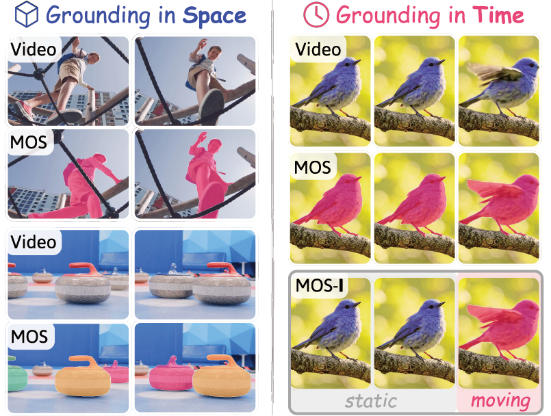

Grounding Moving Object Segmentation in 3D Space and Time
arXiv preprint, 2026
@article{xie2026gmos,
title={Grounding Moving Object Segmentation in 3D Space and Time},
author={Xie, Junyu and Han, Tengda and Xie, Weidi and Zisserman, Andrew},
journal={arXiv preprint arXiv:2605.30352},
year={2026}
}
We present GMOS, a framework that grounds moving object segmentation in 3D space and time, predicting moving objects per-frame from RGB video and achieving state-of-the-art results. The approach is supported by our new GMOS-2K dataset, comprising 2,210 real-world videos with per-object temporal motion annotations, and the temporally fine-grained MOS-I evaluation protocol.